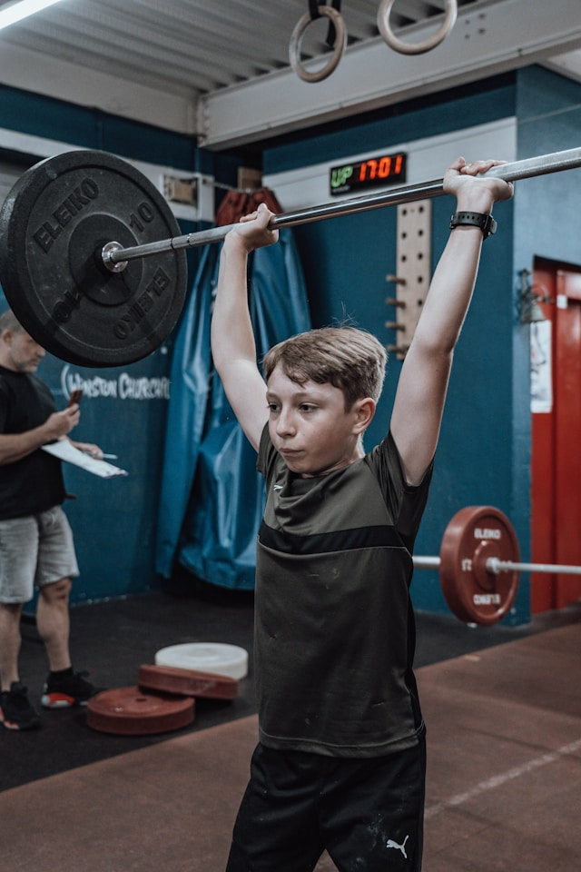

מאמרים
תוכן מקצועי

אימון כוח לילדים
מה אומר המחקר על אימוני התנגדות אצל ילדים ומתבגרים — בטיחות, מיתוסים נפוצים, והשפעה על כוח, מהירות, הספק ובריאות העצמות.
קריאת המאמר ←
PHV — שיא מהירות הצמיחה
מה זה PHV, למה חשוב להתחשב בשלב הצמיחה הביולוגי בתכנון אימונים לספורטאים צעירים, ואיך מודדים את זה בפועל.
קריאת המאמר ←